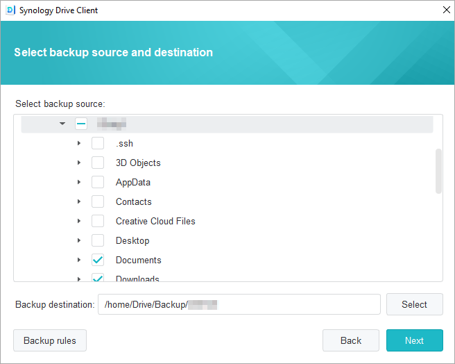

概要
Synology Drive Serverは、クロスプラットフォームの優れた同期ソフトウェアであるだけでなく、ユーザーの個人コンピューターからデータをバックアップするスマートな手段でもあります。 そのデスクトップユーティリティであるSynology Drive Clientは、手軽に帯域を節約できるリアルタイムのバックアップソリューションで、ひとつのファイルで最大32までの履歴バージョンによって優れた保護機能を提供します。
Synology NAS上でSynology Drive Serverを設定し、Synology Drive Clientをダウンロードする
- [パッケージ センター] に進み、[Synology Drive Server] を見つけ、[インストール] をクリックします。3つのパッケージ、Synology Drive Admin Console、Synology Drive ShareSync、Synology Driveは、まとめてダウンロードされます。
- Synology Drive を起動します。右下隅に、Synology Drive Clientをダウンロードするプロンプトがあります。

あるいは左下隅に進み、ユーザーアイコンをクリックし、[クライアント] > [ダウンロード クライアント] に進みます。
その他の方法として、Synology Synology ダウンロード センターから Synology Drive Clientをダウンロードすることもできます。 - コンピュータでインストーラを起動し、画面の指示に従って Synology Drive Client をインストールしてくださいインストレーションの後、[今すぐスタート] をクリックして Synology Drive Client を実行します。.

- [バックアップ タスク] を選択します。

- Synology Drive Server を起動している Synology NAS のアドレスまたは QuickConnect ID、ユーザー名、パスワードを入力します。右側の検索アイコンをクリックすると、Synology Drive Client が自動的にローカル ネットワーク内にあるSynology NASを検索します。[次へ] をクリックします。

- バックアップ ソースを選択し、同期したくないサブフォルダーのチェックマークを外します。Synology Drive Client は、ご自身のコンピュータ名を使って選択した同期先にバックアップ フォルダを作成します。home フォルダが、デフォルトの対象フォルダとして選択されます。リストにないフォルダを使用する場合は、システムの管理者に連絡してください。システム管理者は、Synology Drive管理コンソールヘルプページを参照できます。同期フォルダか規則を設定するには、[バックアップ規則] をクリックします。[次へ] をクリックします。
 - バックアップ モードを選択して、[次へ] をクリックします。

- バックアップ設定のサマリを確認します。変更するには [戻る] をクリックし、設定を終えるには[完了] をクリックします。

- メイン ウィンドウでバックアップの進行状況を確認してください。

Synology Drive Clientで、同期したファイルの前のバージョンをダウンロードまたは復元する
- Synology Drive Clientで、[バックアップタスク] > [復元] に進み、復元するファイルまたはフォルダーを見つけます。

- 取得するファイルを選択し、[以前のバージョンを参照] をクリックします。ファイルが誤ってコンピュータ上から削除された場合は、[復元] をクリックして復元します。

- ダウンロードしたいファイルのバージョンを選択し、[ダウンロード] をクリックします。

Synology Drive管理コンソールで、同期したファイルの前のバージョンをダウンロードまたは復元する
- DSMで、[Synology Drive管理コンソール] > [チームフォルダー] に進み、復元するファイルがあるフォルダーをクリックし、Version Explorer] をクリックします。

- Version Explorerウィンドウで、取得したいファイルをクリックし、[以前のバージョンを参照] をクリックします。

- ダウンロードしたいファイルのバージョンを選択し、[ダウンロード] をクリックします。または、選択したバージョンを確実に復元したい場合は、[復元] をクリックすると、現在のバージョンに上書きされます。

データをより安全に保護するために
データを保護し、バックアップするための他の方法については、[ここ]をクリックして DSM で提供されるその他のバックアップ サービスに関するチュートリアルをお読みください。